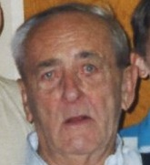

Vladislav dropped out of high school after sophomore year to support his family during the Great Depression. He spent his entire career working at the Grand Trunk Railroads, starting at the very bottom as an office boy and ending as the chief of the tariff bureau.
He fought in World War Two. He was asked to join the officer training, but he turned it down because he did not want to send anyone to die. He received multiple medals across his distinguished career, even receiving an egg tea cup from a fellow comrade whose life he saved. After his five years of service, he never wanted to talk about it and suffered from PTSD.
He started dating Wanda when she worked at the Grand Trunk Railroads, and he would visit on breaks during his military service. After the war ended and supplies were still rationed, he would bring her butter he got from the black market.
He loved nature, and frequently took his kids out to explore for fossils, examine caves, and go fishing.